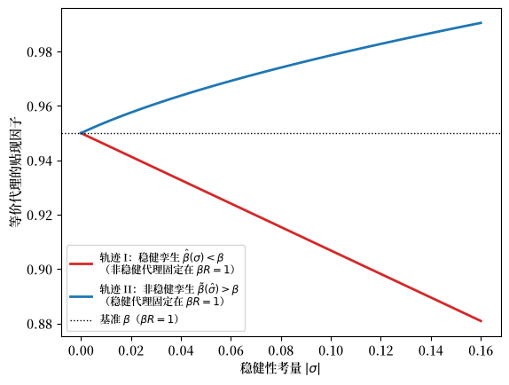
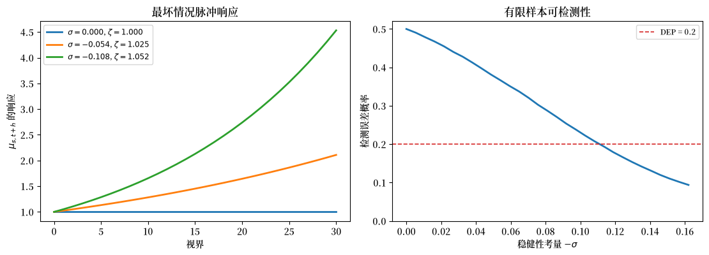

82. 稳健消费平滑与预防性储蓄#
82.1. 概述#
本讲座研究由 Hansen et al. [1999] 和 Hansen and Sargent [2008] 提出的 LQ 永久收入模型的稳健版本。
这是关于 LQ 永久收入模型三讲中的第三讲。
它建立在 LQ 永久收入模型 之上，该讲座发展了标准模型，以及 不完全市场与完全市场下的消费平滑，该讲座研究了其横截面和市场结构方面的含义。
一个不信任自己对劳动收入过程设定的消费者会从事某种形式的预防性储蓄。
我们对具有稳健性考量的模型的描述包括：
（对于数量而言）稳健性考量如何在观测上等价于不耐心程度的增加
消费者用来塑造其决策规则的最坏情况模型如何扭曲基准模型的禀赋过程，使其朝向更强的持续性
对禀赋过程设定误差影响的频域表示
对模型不确定性大小的检测误差概率刻画
本讲座最后将 不完全市场与完全市场下的消费平滑 的 Bewley 经济与稳健性机制相结合。
利用 Hansen and Sargent [2008] 的工具，我们展示：
使用相同决策规则的连续统消费者 \(i\) 如何仍能在其稳健性参数 \(\sigma_i \leq 0\) 和贴现因子 \(\beta_i\) 上存在差异，只要 \((\sigma_i, \beta_i)\) 对位于下文推导的观测等价轨迹上
每个这样的消费者如何选择与基准的、对禀赋过程设定误差毫不担忧的普通 \((\sigma = 0, \beta)\) 代理相同的消费-储蓄规则
均衡利率 \(R = \beta^{-1}\) 和所有总量动态因此如何与基准 Bewley 模型的相一致
不同的 \((\sigma_i, \beta_i)\) 代理如何表现得就像他们对其非金融收入过程持有不同的主观模型一样
我们首先以其一般形式呈现 HST 模型，其中包括物质资本和投资 \(i_t\)。
当我们回到 不完全市场与完全市场下的消费平滑 的 Bewley 经济时，我们专门讨论一个没有资本的纯禀赋经济，因此投资在那里不起作用。
让我们从一些导入开始。
import numpy as np
import matplotlib.pyplot as plt
from scipy.stats import norm
import matplotlib as mpl # i18n
FONTPATH = "fonts/SourceHanSerifSC-SemiBold.otf" # i18n
mpl.font_manager.fontManager.addfont(FONTPATH) # i18n
mpl.rcParams['font.family'] = ['Source Han Serif SC'] # i18n
82.2. 简要回顾#
我们回顾 LQ 永久收入模型 和 不完全市场与完全市场下的消费平滑 的要点。
一个具有二次效用和贴现因子 \(\beta\) 的消费者面对禀赋过程
最优决策规则具有一个状态空间表示，其中状态是当前消费 \(c_t\) 和外生禀赋状态 \(z_t\)：
我们再次使用双因子禀赋 \(y_t = z_{1t} + z_{2t}\)，
其中 \(z_{1t}\) 是永久成分，\(z_{2t}\) 是纯粹的暂时成分。
下面的单元格固定了后文使用的校准。
# 参数（与前面的讲座相同）
β = 0.95 # 贴现因子
σ1 = 0.15 # 永久冲击的标准差
σ2 = 0.30 # 暂时冲击的标准差
82.3. 稳健永久收入模型#
82.3.1. 稳健性与预防性储蓄#
我们现在研究一个不信任自己对支配其劳动收入的随机过程设定的消费者。
该模型由 Hansen et al. [1999] (HST) 提出，他们用美国季度消费和投资数据对其进行了估计。
关于 HST 模型及其资产定价含义的更完整论述，请参见 稳健永久收入与定价。
一个担心模型设定误差的消费者会从事某种形式的预防性储蓄，这不同于通常的预防性动机（后者需要凸的边际效用）。
在这里，预防性动机之所以产生，是因为消费者想要防范收入冲击条件均值的设定误差，并且即使在二次偏好下它也起作用。
HST 展示了一个重要的观测等价性结果：仅就数量 \((c_t, i_t)\) 而言，稳健性考量与不耐心程度的增加（\(\beta\) 的减小）是无法区分的。
我们在下文中仔细展开这一结果。
82.3.2. HST 模型#
HST 的模型的特点是一个计划者，其偏好作用于消费流 \(\{c_t\}\)，通过服务流 \(\{s_t\}\) 来中介。
设 \(b\) 为一个偏好移位项（效用极乐点）。
稳健计划者的贝尔曼方程为
受制于家庭技术、资本积累、禀赋动态以及状态法则：
这里 \(^*\) 表示下一期的值；\(c\) 是消费；\(s\) 是标量服务度量；\(h\) 是习惯存量；\(k\) 是资本存量；\(i\) 是投资；\(d\) 是禀赋/技术冲击；\(b\) 是偏好冲击（极乐点移位项，不同于上文使用的债券/债务变量 \(b_t\)）；\(\epsilon^* \sim N(0,I)\) 是基准冲击；而 \(w^*\) 是由一个最小化代理选择的对 \(\epsilon^*\) 条件均值的扭曲。
惩罚参数 \(\theta > 0\) 支配着消费者对稳健性的考量。
我们使用变换
因此 \(\sigma = 0\) 对应于没有稳健性考量，而 \(\sigma < 0\) 对应于日益增强的考量。
当 \(\lambda > 0\) 且 \(\delta_h \in (0,1)\) 时，技术 (82.5) 容纳了习惯持续性（正的 \(\lambda\)）或耐久性。
存量 \(h_t\) 是当前和过去消费的几何加权平均。
方程 \(c_t + k_t = Rk_{t-1} + d_t\)（其中 \(R = \delta_k + \gamma\)）将资本积累与线性生产技术结合起来。
\(R\) 是资本的物质总回报率。
设 \(x_t^\top = [h_{t-1},\, k_{t-1},\, z_t^\top]\)。
状态转移方程为：
其中 \(u_t = c_t\)，\(w_{t+1}\) 是对 \(\epsilon_{t+1}\) 条件均值的扭曲。
HST 用美国季度数据（1970Q1-1996Q3）估计了该模型，消费使用非耐久品加服务，投资使用耐久品消费加私人总投资。
主要估计值总结在下表中（报告于 HST 的附录 A）：
参数 |
习惯 |
无习惯 |
|---|---|---|
无风险利率 |
0.025 |
0.025 |
\(\beta\) |
0.997 |
0.997 |
\(\delta_h\) |
0.682 |
— |
\(\lambda\) |
2.443 |
0 |
\(\alpha_1\) |
0.813 |
0.900 |
\(\alpha_2\) |
0.189 |
0.241 |
\(\phi_1\) |
0.998 |
0.995 |
\(\phi_2\) |
0.704 |
0.450 |
\(2 \times \log L\) |
779.05 |
762.55 |
HST 施加了 \(\beta R = 1\) 和 \(\delta_k = 0.975\)，因此一旦估计出 \(\beta\)，\(\gamma\) 就被确定下来。
2.5% 的年实际利率对应于 \(\beta = 0.997\)。
82.3.3. \(\sigma = 0\) 时的解#
当 \(\sigma = 0\) 时目标函数简化为
构造拉格朗日函数并推导一阶条件得到：
这里 \(\mu_{st}\) 是消费服务的边际估值，它总结了内生状态变量 \(h_{t-1}\) 和 \(k_{t-1}\)。
方程 (82.8)（最后一行）意味着 \(\mathbb{E}_t\mu_{c,t+1} = (\beta R)^{-1}\mu_{ct}\)，因此当 \(\beta R = 1\) 时 \(\mu_{st}\) 是一个鞅：
对某个向量 \(\nu\)。
向前求解并代入得到
其中
且 \(\tilde\delta_h = (\delta_h + \lambda)/(1+\lambda)\)。
在被广泛研究的特殊情形 \(\lambda = \delta_h = 0\) 下，因此 \(s_t = c_t\) 且 \(\mu_{st} = b_t - c_t\)，从非人力财富 \(Rk_{t-1}\) 中消费的边际倾向等于从人力财富 \(\sum_{j=0}^{\infty}R^{-j}\mathbb{E}_t d_{t+j}\) 中消费的边际倾向，这是 LQ 模型的一个众所周知的特征。
\(\mu_{st}\) 的公式可以写成 \(\mu_{st} = M_s x_t\)，其中 \(x_t\) 遵循 (82.6)。
由此可得
标量 \(\alpha\) 在下文的观测等价性结果中起核心作用。
82.3.4. 观测等价性#
HST 陈述了一个观测等价性定理。
定理 82.1 (观测等价性，I)
固定除 \((\sigma, \beta)\) 之外的所有参数，并假设当 \(\sigma = 0\) 时 \(\beta R = 1\)。
存在 \(\underline\sigma < 0\)，使得对于任意 \(\sigma \in (\underline\sigma, 0)\)，\((0,\beta)\) 的最优消费-投资计划也被一个参数为 \((\sigma, \hat\beta(\sigma))\) 的稳健决策者所选择，其中
且 \(\hat\beta(\sigma) < \beta\)。
由于 \(R > 1\) 且 \(\alpha^2 > 0\)，更负的 \(\sigma\)（更强的稳健性考量）会降低 \(\hat\beta\)。
一个稳健的消费者想要储蓄更多，因为他的另一个自我，一个效用最小化的代理，让未来收入看起来比近似模型预测的更糟。
较低的贴现因子使消费者更不耐心，因此减少储蓄。
当这两种力量根据 (82.13) 达到平衡时，消费计划在 \((\sigma, \hat\beta(\sigma))\) 对之间是相同的。
Proof. 当 \(\beta R = 1\) 且 \(\sigma = 0\) 时，边际效用 \(\mu_{st}\) 服从鞅
其中 \(\tilde\epsilon_t\) 是标量 IID，均值为零，单位方差。
激活稳健性考量（\(\sigma < 0\)）意味着效用最小化的另一个自我设置
使 \(\mu_{st}\) 的最坏情况模型为：
为使配置保持不变，我们要求稳健欧拉方程 \(\hat\beta R\,\hat{\mathbb{E}}_t\mu_{s,t+1} = \mu_{st}\) 在最坏情况模型下成立，这给出
最小化代理的贝尔曼方程，一个纯预测问题，给出
其中 \(P(\hat\beta)\) 求解标量贝尔曼方程：
方程 (82.13) 是有用的数值对象，因为它给出了从稳健性参数到观测等价贴现因子的直线映射。
82.3.5. 预防性储蓄解释#
消费者对模型设定误差的考量激活了观测等价性定理背后的预防性储蓄动机。
对稳健性的考量使消费者储蓄更多。
减小 \(\beta\) 使消费者储蓄更少。
观测等价性定理表明这两种力量可以被设置成恰好相互抵消。
在特殊情形 \(\lambda = \delta_h = 0\) 下，\(s_t = c_t\)，消费规则为
从非人力财富 \(Rk_{t-1}\) 中消费的边际消费倾向 等于 从人力财富 \(\mathbb{E}_t\sum R^{-j}d_{t+j}\) 中消费的边际消费倾向。
这个等倾向性质是 LQ 模型的标志，并且在存在稳健性考量时仍然存在，这与通常具有凸边际效用的预防性储蓄模型形成对比。
定理 82.1 表明，当 \(\sigma < 0\) 时，观测等价的 \(\hat\beta\) 满足 \(\hat\beta < \beta\)。
如果起点是 \(\beta R = 1\)，那么 \(\hat\beta R < 1\)。
对于在相同利率下具有贴现因子 \(\hat\beta\) 的非稳健消费者，欧拉方程意味着 \(\mathbb{E}_t c_{t+1} < c_t\)：预期消费随时间下降。
这种向下漂移是 定理 82.1 中的不耐心抵消。
它抵消了稳健消费者的预防性储蓄动机，使得消费和投资数量保持不变。
向上漂移的比较出现在 定理 82.2 中，该定理提出了相反的观测等价性问题。
经典预防性动机之所以产生，是因为：
这个渠道需要边际效用的凸性，在二次偏好下不存在。
相比之下，基于稳健性的预防性动机通过冲击条件均值的扭曲运作，移动了对非金融收入创新的一阶矩。
82.3.6. 观测等价性与扭曲预期#
观测等价性结果可以用斯塔克尔伯格乘数博弈来解释。
在最小化代理承诺了一个扭曲过程 \(\{w_{t+1}\}\) 之后，最大化消费者面对以下状态 \(X_t\) 的最坏情况运动法则：
一个担心近似模型对非金融收入随机过程可能设定误差的稳健消费者，使用扭曲转移矩阵 \(A - BF + CK\) 而不是近似转移矩阵 \(A - BF\) 来形成对未来收入的预期。
扭曲预期算子 \(\hat{\mathbb{E}}_t\) 满足
观测等价性要求修改后的人力财富公式
等于其基准对应物 \(\Psi_4 \sum_{j=0}^{\infty} R^{-j} \mathbb{E}_t d_{t+j}\)。
这是通过系数 \(\hat\Psi_j\) 通过 \(\hat\beta\) 的相互调整以及扭曲预期算子 \(\hat{\mathbb{E}}_t\) 通过 \(\sigma\) 的相互调整来实现的。
\(A - BF + CK\) 的最坏情况特征值在模上超过 \(A - BF\) 的特征值，因此最坏情况扭曲使收入过程比近似模型下更具持续性。
这是状态空间形式的预防性动机：最小化代理通过引入低频持续性使未来收入看起来更有风险。
82.3.7. 频域解释#
LQ 永久收入框架有一个自然的频域解释。
消费者的凹效用使他厌恶消费中的高频波动，他通过调整储蓄来平滑这些波动。
高频波动更容易平滑，因此消费者对收入过程高频特征的设定误差自动稳健。
低频波动更难平滑，因为它们更具持续性。
在 HST 的频域记号中，从冲击 \(\epsilon_t\) 到目标 \(s_t - b_t\) 的传递函数是 \(G(\zeta)\)，而 \(H_2\) 标准的频率分解为
被积函数 \(G^\top G\) 在低频 \(\omega \approx 0\) 处最大，那里消费者的福利对收入变动性最敏感。
认识到这一点，最小化代理将最坏情况扭曲集中在低频处。
扭曲过程具有集中在 \(\omega = 0\) 附近的谱密度 \(W(\zeta)^\top W(\zeta)\)。
随着 \(|\sigma|\) 增大，最坏情况冲击的方差增长。
82.3.8. 检测误差概率#
一种规范 \(\sigma\)（或 \(\theta\)）选择的自然方法是问：从统计上区分近似模型与最坏情况模型有多困难？
对于长度为 \(T\) 的样本，可以使用对数似然比检验来比较两个假设。
检测误差概率（DEP）是在不知道哪个模型生成数据时，使用对数似然比统计量做出错误决定的概率。
具体来说：
当 \(\sigma = 0\) 时两个模型相同，DEP \(= 0.5\)。
随着 \(|\sigma|\) 增大，模型发散，DEP 趋向于零。
完整的 DEP 计算需要一个指定的近似模型、其最坏情况对应物以及似然比实验中使用的样本长度。
我们在下文为稳健 Bewley 模型计算这样一个 DEP。
备注
HST 建议 DEP 高于 0.2 是”合理的”，意味着模型在统计上仍然足够难以区分，以至于对稳健性的考量是有正当理由的。
对应于 DEP \(\geq 0.2\) 的 \(\sigma\) 值定义了一组合理的最坏情况模型。
82.3.9. 决策规则的稳健性#
为了评估当数据由扭曲模型生成时稳健决策规则是否比非稳健规则表现更好，定义当决策规则为稳健性参数 \(\sigma_2\) 设计而数据由与 \(\sigma_1\) 相关联的扭曲模型生成时的收益：
其中状态在决策规则 \(F(\sigma_2)\) 和最坏情况冲击 \(K(\sigma_1)\) 下演化：
对于 \(\sigma_1 = 0\)（近似模型生成数据），非稳健规则（\(\sigma_2 = 0\)）在构造上是最优的。
随着 \(\sigma_1\) 减小（数据由日益扭曲的模型生成），\(\sigma_2 = 0\) 规则的收益比稳健规则的收益衰减得更快。
计算收益比较需要求解 \(F(\sigma_2)\) 和 \(K(\sigma_1)\) 的完整 HST 矩阵问题。
82.3.10. 另一个观测等价性结果#
定理 82.2 (观测等价性，II)
固定除 \((\sigma,\beta)\) 之外的所有参数，并考虑 \((\hat\sigma, \hat\beta)\) 的一个消费-投资配置，其中 \(\hat\beta R = 1\) 且 \(\hat\sigma < 0\)。
那么存在 \(\tilde\beta > \hat\beta\)，使得 \((\hat\sigma, \hat\beta)\) 配置也求解 \((0, \tilde\beta)\) 问题。
定理 82.1 表明，从 \(\beta R = 1\) 的基准出发，激活稳健性（\(\sigma < 0\)）等价于减小 \(\beta\)。
定理 82.2 走向相反方向：它表明从 \(\beta R = 1\) 的起点激活稳健性考量的效果，可以通过增大 \(\beta\) 同时设置 \(\sigma = 0\) 来复制。
换句话说，当 \(\beta R = 1\) 时，稳健性考量的运作方式类似于贴现因子的增大，将 \(\beta R > 1\) 推高并赋予预期消费轮廓一个向上的漂移。
Proof. 当 \(\hat\beta R = 1\) 且 \(\hat\sigma < 0\) 时，稳健欧拉方程意味着
我们寻求 \(\tilde\beta > \hat\beta\) 和 \(\sigma = 0\)，使得相同的配置求解具有贴现因子 \(\tilde\beta\) 的非稳健问题。
关键步骤是观察到最坏情况扭曲 \(K(\hat\sigma, \hat\beta)\) 在边际效用过程中引入了一个漂移，它等价于将贴现因子提高到 \(\hat\beta\) 以上所产生的漂移。
令这两个漂移相等并求解 \(K\) 的标量贝尔曼方程得到
当 \(\hat\sigma < 0\) 时，解满足 \(\tilde\beta > \hat\beta\)。
映射 (82.23) 是一个封闭形式，因此我们可以直接绘制它。
下一个图比较了双因子校准的两个观测等价轨迹，使用 \(\alpha^2 = \sigma_1^2 + (1-\beta)^2\sigma_2^2\)（在下文 (82.27) 中推导）。
我们从 \(\hat\beta R = 1\) 的基准出发，因此 \(\hat\beta = \beta\)。
β_bench = β # β R = 1 的基准
α2 = σ1**2 + (1 - β)**2 * σ2**2 # 双因子 α^2（见 eq:bew_alpha2）
σ_hat_vals = np.linspace(0.0, -0.16, 60)
# 轨迹 I（eq:obseq / eq:bew_locus）：非稳健代理固定在 βR=1；
# 报告稳健孪生代理的贴现因子 β̂(σ) < β
β_hat = β_bench + σ_hat_vals * α2 * β_bench / (1 - β_bench)
# 轨迹 II（eq:obsequivn2）：稳健代理固定在 βR=1；
# 报告非稳健孪生代理的贴现因子 β̃(σ̂) > β
disc = 1 - 4 * β_bench * (1 + σ_hat_vals * α2) / (1 + β_bench)**2
β_tilde = (β_bench * (1 + β_bench)) / (2 * (1 + σ_hat_vals * α2)) \
* (1 + np.sqrt(disc))
fig, ax = plt.subplots()
ax.plot(-σ_hat_vals, β_hat, lw=2, color='C3',
label=r'轨迹 I：稳健孪生 $\hat\beta(\sigma)<\beta$'
'\n（非稳健代理固定在 $\\beta R=1$）')
ax.plot(-σ_hat_vals, β_tilde, lw=2, color='C0',
label=r'轨迹 II：非稳健孪生 $\tilde\beta(\hat\sigma)>\beta$'
'\n（稳健代理固定在 $\\beta R=1$）')
ax.axhline(β_bench, color='k', linestyle=':', lw=1,
label=r'基准 $\beta$（$\beta R = 1$）')
ax.set_xlabel(r'稳健性考量 $|\sigma|$')
ax.set_ylabel('等价代理的贴现因子')
ax.legend(fontsize=8.5)
plt.show()
print(f"at σ̂ = {σ_hat_vals[-1]:.3f}: β̃ = {β_tilde[-1]:.4f} > β = {β_bench}")
print(f" β̂ = {β_hat[-1]:.4f} < β = {β_bench}")
findfont: Failed to find font weight normal, now using 600.
findfont: Failed to find font weight normal, now using 600.
findfont: Failed to find font weight normal, now using 600.
findfont: Failed to find font weight normal, now using 600.

图 82.1 两个观测等价性实验。轨迹 I（低于 \(\beta\)）将非稳健 代理固定在 \(\beta R=1\)，并报告稳健孪生代理的 贴现因子 \(\hat\beta(\sigma)\)；轨迹 II（高于 \(\beta\)）将 稳健代理固定在 \(\beta R=1\)，并报告非稳健孪生代理的 贴现因子 \(\tilde\beta(\hat\sigma)\)。#
at σ̂ = -0.160: β̃ = 0.9905 > β = 0.95
β̂ = 0.8809 < β = 0.95
两条轨迹在 \(\sigma = 0\) 处都经过基准 \(\beta\)，并随着稳健性考量的增长而分离。
阅读该图的关键在于，两条轨迹固定了不同的代理，因此纵轴上绘制的贴现因子在每条曲线上指的是不同的代理。
来自 定理 82.1 的轨迹 I，将非稳健代理固定在基准 \((\sigma = 0, \beta)\)（\(\beta R = 1\)），并报告模仿它的稳健代理的贴现因子 \(\hat\beta(\sigma) < \beta\)。
这就是 HST 称稳健性考量在观测上等价于较低贴现因子的意义所在：因为稳健性已经使代理储蓄更多，所以必须降低其贴现因子才能将配置保持在基准处。
因为非稳健基准具有 \(\beta R = 1\)，它的最优消费是一个鞅，\(\mathbb{E}_t c_{t+1} = c_t\)。
稳健孪生代理选择相同的消费过程，所以它也满足 \(\mathbb{E}_t c_{t+1} = c_t\)。
较低的 \(\hat\beta\)（具有 \(\hat\beta R < 1\)）本身会赋予一个向下漂移，但稳健代理的预防性储蓄恰好抵消了它，使预期消费保持平稳。
来自 定理 82.2 的轨迹 II，则将稳健代理固定在 \((\hat\sigma, \beta)\)（\(\beta R = 1\)），并报告模仿它的非稳健代理的贴现因子 \(\tilde\beta(\hat\sigma) > \beta\)。
这里没有不耐心抵消，所以共同配置继承了稳健代理的预防性向上漂移，非稳健孪生代理通过 \(\tilde\beta R > 1\) 复制了它。
这两个实验编码了相同的经济学：稳健性考量增加了预防性储蓄，其作用类似于额外的耐心。
它们唯一的区别在于哪个代理被锚定在 \(\beta R = 1\)，从而在于共同的储蓄动机是表现为恰好抵消的不耐心调整（轨迹 I，预期消费平稳），还是表现为预期消费的向上漂移（轨迹 II）。
82.3.11. 稳健 LQ Bewley 模型#
我们现在通过将 不完全市场与完全市场下的消费平滑 的 Bewley 经济嵌入 HST 框架并应用观测等价性定理来综合本讲座。
我们将构造一族稳健 Bewley 经济，以稳健性水平 \(\sigma \leq 0\) 为参数，其均衡数量与普通 Bewley 模型的相同。
我们首先将 Bewley 经济映射到 HST 记号中，将稳健模型专门化为 \(\lambda = \delta_h = 0\)（无习惯，无耐久品）以及一个纯禀赋经济（无物质资本，\(k_t = 0\)）。
在这种情况下：
服务等于消费：\(s_t = c_t\)。
唯一交易的证券是单期无风险债券，我们将家庭的净资产头寸写作 \(a_t=-b_t\)，因此正的 \(a_t\) 表示财富而非债务。
禀赋过程遵循状态空间表示 (82.1)。
家庭的增广状态向量是 \(x_t = [a_t,\; z_t^\top]^\top\)，运动法则 (82.6) 专门化为
目标函数是 \(\mathbb{E}_0 \sum_{t=0}^\infty \beta^t [-(c_t - \gamma)^2/2]\)，这是 HST 标准 (82.7)，其中 \(\sigma = 0\) 且 \(b_t \equiv \gamma\)（一个固定的极乐水平）。
因此，\(\sigma = 0\) 的稳健贝尔曼方程 (82.4) 恰好简化为 LQ 永久收入模型 的 LQ 问题，证实了 HST 框架嵌套了 Bewley 模型。
我们接下来计算稳健性参数 \(\alpha^2\)。
从 \((c_t,z_t)\) 表示 (82.2)，消费创新为
向量 \(h\) 在 HST 标量 \(\alpha\) 公式 (82.12) 中扮演 \(\nu^\top = M_s C\) 的角色。
因此，
对于双因子模型 (82.3)，其中 \(\check{A} = \mathrm{diag}(1,0)\) 且 \(\check{C} = \mathrm{diag}(\sigma_1,\sigma_2)\)，这简化为
永久冲击方差 \(\sigma_1^2\) 以系数 1 进入，因为一个单位的永久冲击被完全资本化到消费中。
暂时冲击方差 \(\sigma_2^2\) 以小系数 \((1-\beta)^2\) 进入，因为只有其年金价值被消费。
将 定理 82.1 (82.13) 应用于均衡利率 \(R = \beta_0^{-1}\) 以及来自 (82.27) 的 \(\alpha^2\)，得到 Bewley 观测等价轨迹：
对于 \(\sigma < 0\)，我们有 \(\hat\beta(\sigma) < \beta_0\)。
一个在此轨迹上具有对 \((\sigma, \hat\beta(\sigma))\) 的代理更担心模型设定误差（更低的 \(\sigma\)），但也更不耐心（更低的 \(\hat\beta\)）；这两种力量恰好抵消，使得消费决策规则保持不变。
这些要素结合成一个稳健 Bewley 均衡。
命题 82.1
假设 Bewley 经济中的所有代理共享一个位于轨迹 (82.28) 上的公共对 \((\sigma, \hat\beta(\sigma))\)，其中 \(R = \beta_0^{-1}\)。
那么每个代理的最优消费计划与普通 \((\sigma = 0,\, \beta_0)\) 经济的相同，且均衡利率保持 \(R = \beta_0^{-1}\)。
Proof. 由 定理 82.1，每个代理的消费-储蓄规则与基准相同。
因此商品市场出清条件 \(\int c_t^i\, di = Y\) 在 \(R = \beta_0^{-1}\) 处得到满足，原因与基准 Bewley 经济中相同。
82.3.11.1. 异质 \((\beta_i, \sigma_i)\) 偏好#
一个更丰富的扩展在经济中填充了连续统类型，每个类型由一个稳健性参数 \(\sigma_i \in [\underline\sigma, 0]\) 索引，贴现因子为
由于所有对 \((\sigma_i, \beta_i)\) 都位于 (82.28) 上，每个代理采用与基准相同的消费规则。
总量动态保持不变，因为消费的横截面均值等于 \(Y\)，横截面方差每期以 \(\alpha^2\) 的速率增长。
均衡利率保持不变：\(R = \beta_0^{-1}\)。
代理对外部计量经济学家而言在观测上无法区分，因为关于 \((c_t^i, a_t^i)\) 的数据无法揭示代理 \(i\) 是具有 \(\sigma_i = 0\) 还是 \(\sigma_i < 0\)。
代理在其内部模型上有所不同，因为具有 \(\sigma_i < 0\) 的代理对其条件预期应用最坏情况扭曲 \(w_{t+1}^i = K(\sigma_i, \beta_i)\,\mu_{s,t}^i\)，而具有 \(\sigma_i = 0\) 的代理则按面值接受近似模型。
这为一个具有异质模糊厌恶的 Bewley 模型奠定了基础：尽管每个代理在可观测选择方面表现相同，他们却持有不同的收入过程主观模型，并对模型不确定性有不同的态度。
82.3.11.2. 计算#
# Bewley 参数
β0_bew = β # 0.95
σ1_bew = σ1 # 0.15
σ2_bew = σ2 # 0.30
R_bew = 1.0 / β0_bew
# 双因子 Bewley α^2
α2_bew = σ1_bew**2 + (1 - β0_bew)**2 * σ2_bew**2
print(f"α^2 (Bewley, two-factor) = {α2_bew:.6f}")
print(f" permanent component σ1^2 = {σ1_bew**2:.6f} "
f"({100*σ1_bew**2/α2_bew:.1f} % of α^2)")
print(f" transitory component (1-β)^2σ2^2= {(1-β0_bew)**2*σ2_bew**2:.6f} "
f"({100*(1-β0_bew)**2*σ2_bew**2/α2_bew:.1f} % of α^2)")
α^2 (Bewley, two-factor) = 0.022725
permanent component σ1^2 = 0.022500 (99.0 % of α^2)
transitory component (1-β)^2σ2^2= 0.000225 (1.0 % of α^2)
这个计算展示了为什么在此校准中永久冲击主导 \(\alpha^2\)。
我们现在求解附加于此 \(\alpha^2\) 的标量稳健预测问题。
该解选择满足观测等价欧拉方程的贝尔曼方程根。
def robust_scalar_solution(σ, β0, α2):
"""
在观测等价轨迹上求解标量稳健边际效用问题。
"""
α = np.sqrt(α2)
R = 1.0 / β0
if np.isclose(σ, 0.0):
return β0, np.nan, 1.0, 0.0
β_hat = β0 + σ * α2 * β0 / (1 - β0)
disc = (β_hat - 1 + σ * α2)**2 + 4 * σ * α2
root_disc = np.sqrt(max(disc, 0.0))
target_ζ = 1 / (β_hat * R)
candidates = []
for sign in (1.0, -1.0):
P = (β_hat - 1 + σ * α2 + sign * root_disc) / (-2 * σ * α2)
ζ = 1 / (1 - σ * α2 * P)
K = (ζ - 1) / α
candidates.append((abs(ζ - target_ζ), P, ζ, K))
_, P, ζ, K = min(candidates, key=lambda x: x[0])
return β_hat, P, ζ, K
def log_likelihood_ratio(paths, ζ, α):
"""
返回 log p_worst(path) - log p_approx(path)。
"""
lag = paths[:, :-1]
lead = paths[:, 1:]
ll_worst = -0.5 * np.sum(((lead - ζ * lag) / α)**2, axis=1)
ll_approx = -0.5 * np.sum(((lead - lag) / α)**2, axis=1)
return ll_worst - ll_approx
def simulate_scalar_paths(ζ, α, T, n_paths, seed):
rng = np.random.default_rng(seed)
paths = np.zeros((n_paths, T + 1))
shocks = rng.standard_normal((n_paths, T))
for t in range(T):
paths[:, t + 1] = ζ * paths[:, t] + α * shocks[:, t]
return paths
def detection_error_probability(ζ, α, T=40, n_paths=10_000, seed=1234):
"""
近似律和最坏情况标量律的有限样本 DEP。
"""
if np.isclose(ζ, 1.0):
return 0.5
approx_paths = simulate_scalar_paths(1.0, α, T, n_paths, seed)
worst_paths = simulate_scalar_paths(ζ, α, T, n_paths, seed + 1)
llr_approx = log_likelihood_ratio(approx_paths, ζ, α)
llr_worst = log_likelihood_ratio(worst_paths, ζ, α)
return 0.5 * (np.mean(llr_worst < 0) + np.mean(llr_approx > 0))
下一个图报告了由这个已求解的标量问题所隐含的最坏情况动态和模型检测概率。
α_bew = np.sqrt(α2_bew)
β_min = 0.88
σ_min = (β_min - β0_bew) * (1 - β0_bew) / (α2_bew * β0_bew)
σ_vals = np.linspace(0.0, σ_min, 31)
solutions = np.array([robust_scalar_solution(σ, β0_bew, α2_bew) for σ in σ_vals])
β_hat_vals = solutions[:, 0]
ζ_vals = solutions[:, 2]
K_vals = solutions[:, 3]
dep_vals = np.array([
detection_error_probability(ζ, α_bew)
for ζ in ζ_vals
])
fig, axes = plt.subplots(1, 2, figsize=(11.2, 4.1))
horizons = np.arange(31)
for σ in [0.0, σ_vals[10], σ_vals[20]]:
β_hat, P, ζ, K = robust_scalar_solution(σ, β0_bew, α2_bew)
label = rf'$\sigma={σ:.3f}$, $\zeta={ζ:.3f}$'
axes[0].plot(horizons, ζ**horizons, lw=2, label=label)
axes[0].set_xlabel('视界')
axes[0].set_ylabel(r'$\mu_{s,t+h}$ 的响应')
axes[0].set_title('最坏情况脉冲响应')
axes[0].legend(fontsize=8.5)
axes[1].plot(-σ_vals, dep_vals, lw=2, color='C0')
axes[1].axhline(0.2, color='C3', linestyle='--', lw=1.2,
label='DEP = 0.2')
axes[1].set_xlabel(r'稳健性考量 $-\sigma$')
axes[1].set_ylabel('检测误差概率')
axes[1].set_ylim(0.0, 0.52)
axes[1].set_title('有限样本可检测性')
axes[1].legend(fontsize=8.5)
fig.tight_layout()
plt.show()
findfont: Failed to find font weight normal, now using 600.

图 82.2 已求解的稳健标量模型#
左图显示，随着 \(\sigma\) 变得更负，已求解的最坏情况律使边际效用更具持续性。
右图从近似标量律 \(\mu_{t+1}=\mu_t+\alpha\epsilon_{t+1}\) 与已求解的最坏情况律 \(\mu_{t+1}=\zeta(\sigma)\mu_t+\alpha\epsilon_{t+1}\) 之间的精确似然比计算 DEP。
82.3.12. 结束语#
我们以对全部三讲关键信息的总结来结束。
LQ 永久收入模型，弗里德曼永久收入假说的理性预期版本，有两个互补的状态空间表示：
\((b_t, z_t)\) 表示：强调消费者的最优借贷是历史依赖的，并与消费协整。
\((c_t, z_t)\) 表示：强调消费是一个鞅（随机游走），并且资产 \(b_t\) 编码在消费中，因此消费的脉冲响应函数是”箱形的”：水平的永久移动。
我们将这个单代理模型嵌入到一个具有连续统事后异质消费者的 Bewley 均衡中。
均衡总利率 \(R = \beta^{-1}\) 由恒定的平均消费支撑，尽管消费的横截面方差随年龄线性增长。
同一模型的完全市场版本实现了完全风险分担和一个时不变的消费分布，代价是更复杂的金融安排（阿罗证券）。
对模型设定误差的考量，以 \(\sigma = -\theta^{-1} \leq 0\) 为参数，改变了永久收入模型。
对稳健性的考量即使在二次偏好下也通过扭曲收入冲击的条件均值产生一个预防性储蓄动机。
扭曲的最坏情况模型使收入过程更具持续性，将功率移向低频，那里永久收入消费者最脆弱。
观测等价性定理 定理 82.1 表明，仅就数量 \((c_t, i_t)\) 而言，稳健性考量与 \(\beta\) 的减小无法区分。
反向定理 定理 82.2 表明，从 \(\beta R = 1\) 出发，稳健性在观测上等价于 \(\beta\) 的增大，这赋予预期消费一个向上的漂移。
检测误差概率提供了一种校准 \(\sigma\) 的原则性方法：选择足够小的 \(|\sigma|\)，使得近似模型和最坏情况模型在统计上仍然难以区分。
观测等价的 \((\sigma, \hat\beta)\) 对确实对资产价格有不同的含义，HST 在资产定价背景下进一步探讨了这一点。
稳健 Bewley 经济展示了代理如何能够拥有相同的消费决策规则并支撑相同的均衡利率 \(R = \beta_0^{-1}\)，同时在其最坏情况主观收入动态上有所不同。
82.4. 练习#
练习 82.1
我们从基准 Bewley 经济转换到 HST 记号。
将稳健控制设置专门化为无习惯、无资本的 LQ Bewley 环境（\(\lambda = \delta_h = 0\)，\(k_t = 0\)），并令禀赋过程为 (82.3) 中的双因子模型。
将家庭状态写作 \(x_t = [a_t, z_t^\top]^\top\)，其中 \(a_t=-b_t\) 是净资产，并推导运动法则 (82.6) 的矩阵 \((A, B, C)\)。
证明当 \(\sigma = 0\) 时，贝尔曼问题与 LQ 永久收入问题重合。
推导 \(\alpha^2\) 并验证
从经济学上解释为什么永久成分和暂时成分以不同的权重进入。
解答 练习 82.1
这是一个解答：
有 \(x_t = [a_t, z_t^\top]^\top\) 以及预算法则 \(a_{t+1} = R(a_t + y_t - c_t)\)，\(y_t = \check G z_t\)，\(z_{t+1} = \check A z_t + \check C \epsilon_{t+1}\)，堆叠的法则是
\(B\) 的符号为负，因为更高的 \(c_t\) 减少资产积累 \(a_{t+1}\)。
在 \(\sigma=0\) 处，稳健贝尔曼问题坍缩为没有最小化扭曲项的普通 LQ 目标，因此计划者/消费者问题恰好是具有二次效用和线性约束的永久收入问题。
从 \((c_t,z_t)\) 表示，
在 HST 记号中，\(\alpha^2 = h h^\top\)，且对于双因子校准 \(\check A=\mathrm{diag}(1,0)\) 且 \(\check C=\mathrm{diag}(\sigma_1,\sigma_2)\)，所以
永久冲击获得单位权重，因为它们一对一地移动终身资源，而暂时冲击被年金化，因此在消费增长中按 \((1-\beta)\) 缩放。
练习 82.2
这个练习研究一个由稳健但观测等价的 Bewley 消费者组成的连续统。
固定一个基准对 \((\beta_0, \sigma = 0)\)，其中 \(R = \beta_0^{-1}\)，并定义
假设一个单位区间的消费者由 \(i\) 索引，类型为 \(\sigma_i \in [-\bar\sigma, 0]\)，贴现因子为 \(\beta_i = \beta(\sigma_i)\)。
使用 定理 82.1 证明每种类型都具有与基准 \((\beta_0, 0)\) 代理相同的消费规则。
证明总消费和债券市场出清意味着与普通 Bewley 模型相同的均衡利率 \(R = \beta_0^{-1}\)。
解释为什么代理可以在数量上观测等价，同时仍然持有不同的最坏情况主观模型。
解答 练习 82.2
这是一个解答：
定理 82.1 意味着如果 \((\sigma_i, \beta_i)\) 位于
那么类型 \(i\) 选择与基准 \((0,\beta_0)\) 代理相同的决策规则，并且所有类型共享相同的消费政策函数 \(c_t = \mathcal C(a_t,z_t)\)。
由于所有个体政策规则都与基准 Bewley 政策重合，对消费者聚合得到相同的商品和债券市场出清条件，并支撑相同的均衡 \(R=\beta_0^{-1}\)。
观测等价性涉及由最优规则生成的数量，因此不同的 \((\sigma_i,\beta_i)\) 可以生成相同的 \(\{c_t^i,a_t^i\}\)，同时隐含不同的内部最坏情况信念。
练习 82.3
这个练习在不引入额外校准的情况下将数量与信念分开。
考虑稳健 Bewley 经济中的两个代理 \(a\) 和 \(b\)，其中 \(\sigma^a < \sigma^b \leq 0\) 且对于 \(j \in \{a,b\}\)，\(\beta^j = \beta_0 + \sigma^j\alpha^2\beta_0/(1-\beta_0)\)。
证明如果这两个代理从相同的 \((a_t,z_t)\) 出发并观测到相同的冲击 \(\epsilon_{t+1}\)，那么他们的下一期消费和资产选择重合。
解释为什么这两个代理仍然可以在 \(\epsilon_{t+1}\) 的最坏情况条件均值上意见不一致。
总结仅凭数量数据能够识别和不能识别什么。
解答 练习 82.3
这是一个解答：
方程 (82.28) 将两个代理都置于观测等价轨迹上，因此 定理 82.1 意味着两者都使用基准消费规则，因此在 (82.25) 中使用相同的创新向量 \(h\)。
有一个共同的状态和共同的冲击，两个代理应用相同的政策函数和相同的运动法则，因此 \(c_{t+1}^a=c_{t+1}^b\) 且 \(a_{t+1}^a=a_{t+1}^b\)。
最小化反馈 \(K(\sigma^j,\beta^j)\) 可以在不同的 \(j\) 之间有所不同，因此即使代理的可观测选择重合，他们也可以对相同的冲击过程赋予不同的最坏情况条件均值。
结论：数量识别均衡决策规则，但不识别沿观测等价轨迹的不耐心（\(\beta\)）与稳健性（\(\sigma\)）之间的分解。